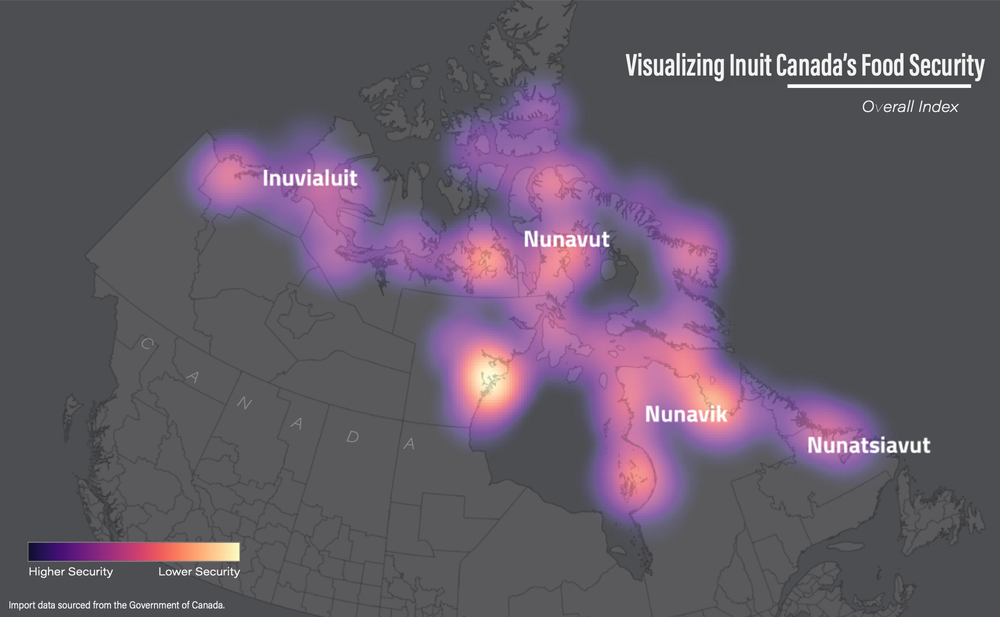
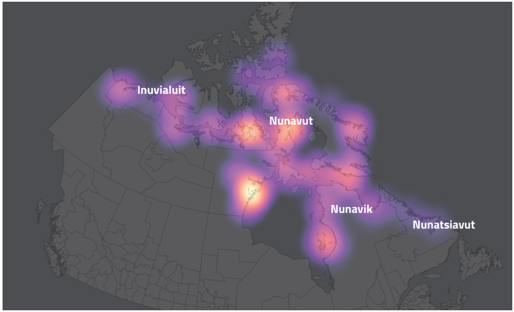
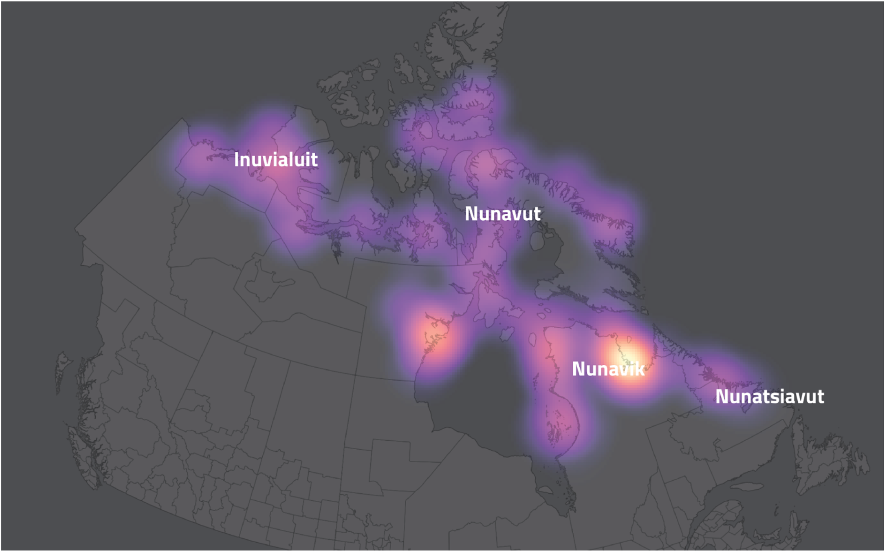
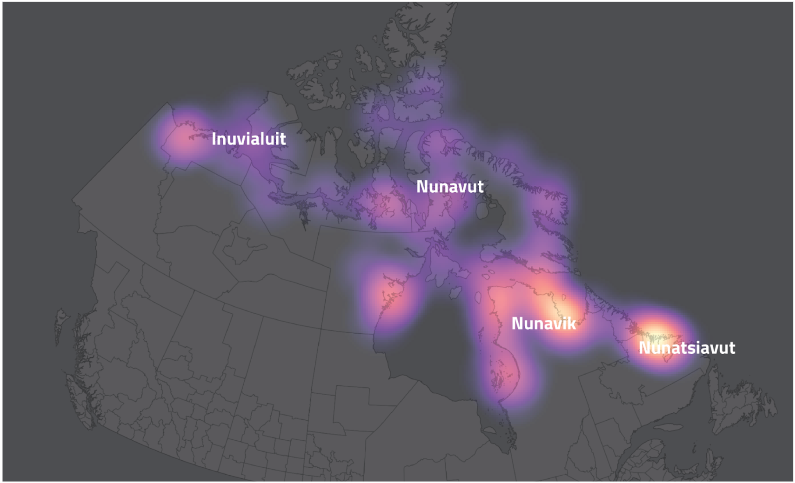
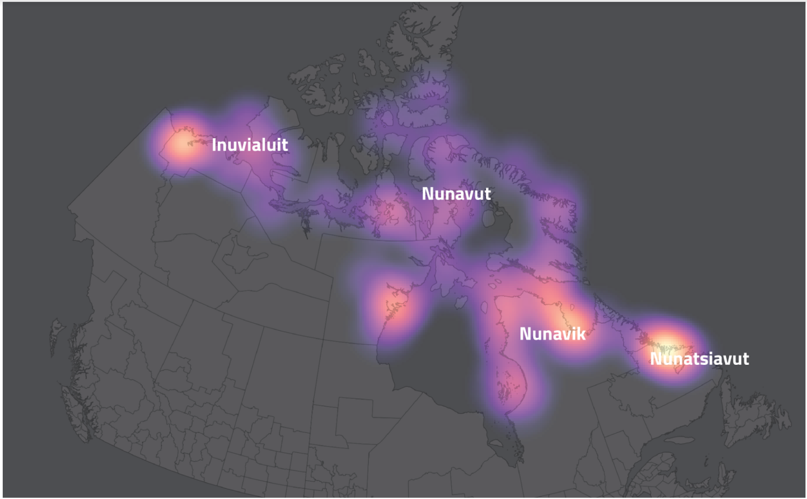

Visualizing Food Security in Inuit Canada
Ashley Cofrin. Spring, 2021

Inuit Nunangat, the homeland of the Inuit people, is located in the northern region of modern Canada. We seek to identify and analyze food insecurity patterns in Inuit Nunangat by constructing a heat map based on an index that combines individual perceived food security, proximity to grocery stores, ability to harvest (fishing, hunting, gathering), and population density. Issues surrounding Indigenous rights and climate change in Canada accelerate the need for this study.
Variables
Proximity to grocery stores, the method most commonly used in food security analyses, is not fully relevant to Inuit communities, where harvesting activities and local co-ops also factor in to food access. As a result, we will be adapting a multi-criteria analysis as used by Sadler (2016, 6) for our project. Sadler considered five variables (availability, socioeconomic distress, population density, proximity to bus stops, and proximity to centers) related to food insecurity in urban Flint, Michigan. Every variable used by Sadler is not relevant to our analysis. Instead, our four variables are: individual perceived food security, presence of grocery stores in the community, ability to harvest, and population density. Following A Guide to Aboriginal Harvesting Rights, we use "harvesting" as an inclusive term to refer to fishing, hunting, trapping, and gathering (plants or fungi) (Truesdale and Brooks 2017, 3). To determine the weight of each of his five variables, Sadler asked two experts to independently evaluate the variables. In our study, we conducted an extensive literature review (Ford 2009; Ford and Beaumier 2011; Galloway 2017; Huet et. al. 2012; Truesdale and Brooks 2017; Wesche and Chan 2010) of the food security issues that Inuit face and independently weighed our four factors. Like Sadler, we then averaged these weights for our final analysis. The implementation of these variables is displayed in Supplementary Figures 1-3.
Overall index (100%)
Based on our heat map, the southernmost regions have the greatest food security. This conclusion is logical: it is easier to build more grocery stores in regions closer to major cities, and grocery stores are one of the top contributors to food security. In turn, northern regions have a greater risk of food insecurity.
Stores (47.5%)
The presence of grocery stores is a significant factor in the food security of many regions, but especially northern regions. While the southern and central regions also score highly for other variables, many northern regions, especially northwestern and north central regions, derive a major part of their score from the presence of grocery stores.
Density (25%)
Opposite of many of our other variables, low population density is indicated by yellow. This is because areas with a low population density are regions of greater food security (less competition for resources) and must receive a greater weight to match other factors that contribute to high food security. Essentially, areas of higher population density are inherently at greater risk because more people suffer when resources are lacking.
Harvest (17.5%)
There is a stark association between harvest and latitude, backed up by both our heat map and correlation plot. Though harvest includes animals, plants, and fungi, there is an overall more equal number of hunters across regions. However, there is a stark contrast in numbers of gatherers; southern regions have many more gatherers. This may be due to the fact that plant life can be harvested for a greater portion of the year in these regions.
Security (10%)
Individual Perceived Food Security does not correlate strongly with any other variable, meaning that we cannot use it to isolate any variable as particularly associated with perceived security. Likely, the lack of correlation can be traced to the fact that this variable is self-reported. While less useful in our analysis, this factor may provide great interest to sociologists or psychologists.
Latitude (10%)
Our results and analysis show spatial trends of food security in Inuit Canada. They expose a latitudinal factor of southern regions experiencing higher food security than northern regions. This pattern emphasizes the help that is needed for Inuit communities in far northern Canada. The need for more food options is enhanced by the rapid pace of climate change. Climate change and human impact also impact native diets through contamination of fish, as humans can introduce dangerous chemicals, causing Inuit communities to ration fish consumption. The Arctic Co-ops, and Canada's food subsidy program (Government of Canada) have done some work toward achieving food security, but continued assistance is needed. Rather than ignoring these communities, the focus should be on helping them maintain food sovereignty.
Concluding Thoughts
The initial goal of our project was to identify and analyze food insecurity patterns in Inuit Nunangat by constructing a heat map based on an index that combines individual perceived food security, proximity to grocery stores, ability to harvest, and population density. Broadly, based on the results of our analysis, we suggest that there is a latitudinal trend in food security, with northern Inuit communities experiencing greater food insecurity than southern communities. However, the heat map of overall scores was more homogenous than expected.
Under a more focused analysis, with each factor considered individually, we suggest that to properly address food security concerns in Inuit Canada, a community-level approach is the most beneficial. While overall scores are relatively homogenous, communities differ greatly for individual factors, especially presence of grocery stores and harvesting. Therefore, there is not one approach to addressing community needs. In addition to differences in the factors we analyzed, each community also differs in its structure and history. For example, co-ops have been very successful in the communities where implemented because they provide food and other community resources. Thus, both qualitative and quantitative approaches are necessary to identify and address food insecurity in Inuit Canada. A GIS-based heat map analysis is a start, but cannot be the end of this analysis.
Harvesting is an important way that Inuit communities are able to support themselves. However, industrialization has poisoned some of this food through the biomagnification of pollution. Some individuals fear harassment from white hunters, and avoid harvesting as a result. Loose connections between community members mean some hunting traditions may not be passed onto younger generations. Most importantly, the rapid pace of climate change impacts hunting. In northern regions, former ice sheets are disappearing, reducing the amount of land, or eliminating bridges between regions. Animals may migrate south or reduce in number, both of which impact Inuit hunters. Therefore, activists, academics, and the Canadian government must work with Inuit communities to provide protection for those who wish to harvest, build connections between generations, and work to reduce the pace of climate change. Still, even with international efforts to slow climate change, it is likely that harvesting is one element of Inuit life likely to see change in the coming years. This accelerates the need for other forms of food resources for Inuit communities.